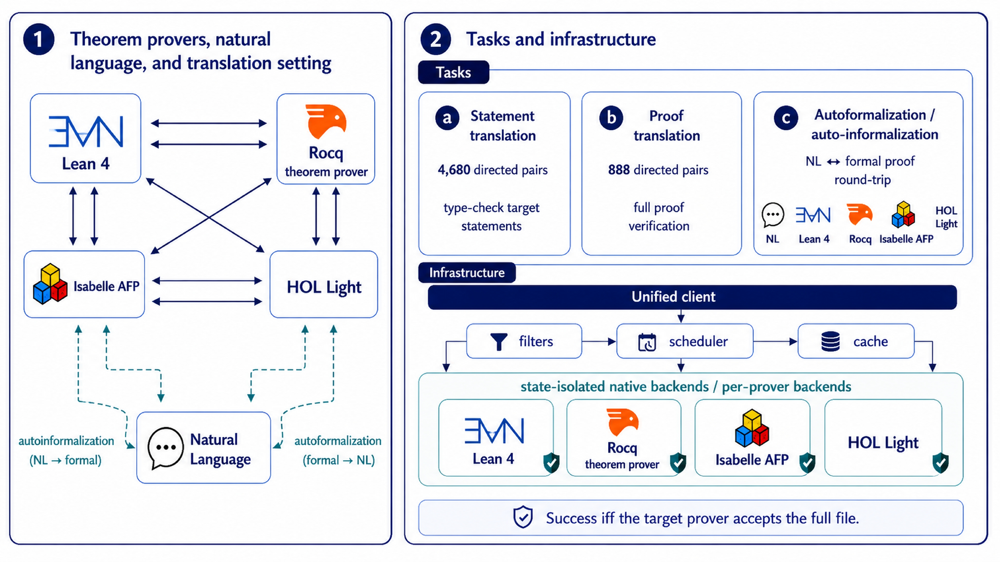

Abstract
Formal theorem proving has emerged as a frontier challenge for machine learning, yet the ecosystem is fragmented: proofs remain siloed across incompatible systems, limiting both training data for learning-based provers and the portability of verified results. We present ITPEval, a benchmark for evaluating automated formal statement translation across ten ITPs, with a complementary four-prover proof corpus. Our benchmark comprises 2,634 aligned statement items from eight sources of mathematics and program verification, yielding 26,340 prover records, alongside 74 proof items in Lean 4, Rocq, Isabelle/HOL, and HOL Light. The collection includes axiomatized theories, library and competition mathematics, verification conditions, and program correctness specifications. We release itpeval, a unified multi-ITP verification infrastructure with state-isolated warm backends that preserve per-artifact native checking semantics. We evaluate both statement and proof translation across five frontier and open-weight LLMs on 12 directed translation pairs: statement translation peaks at 29.1% pass@1 and proof translation at 10.5%; controlled theorems reach 29.7% proof pass@1 versus 5.2% for ecosystem-level translations, indicating that library mismatch is the largest observed source of proof-translation failure. In addition to pass@k evaluation, a deterministic Lean 4 BEq check establishes equivalence for 54.0% of verified source-to-Lean 4 miniF2F statement translations, showing that native type-checking alone can substantially overestimate semantic fidelity; an exploratory autoformalization/auto-informalization round-trip study suggests target-dependent verification patterns and possible benefits from multi-ITP context.

Figure 1. The evaluation setting. Models translate statements and proofs among Lean 4, Rocq, Isabelle/HOL and HOL Light, and a translation counts only if the target prover accepts the whole file.